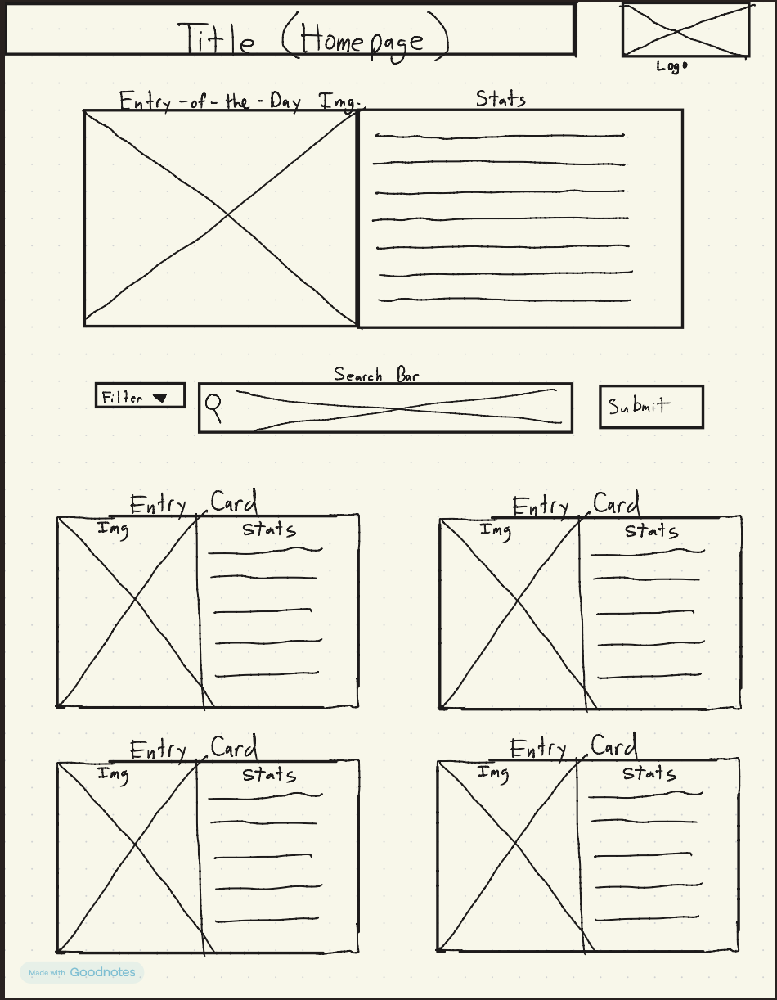

Overview
Purpose
The purpose of this project is to create an informed, easy to navigate index of enemies, weapons, items, and bosses that are present in the titular video game "Elden Ring."
Audience
The intended audience of this site would be anyone who is an avid fan of "Elden Ring" or "Souls-like" games in general. At this site they would be able to find specific, detailed information of each enemy type, boss type, weapon type, and item information within the game.
Dynamic elements
This index will provide a search bar that will navigate through the entire site array to find any results that match what the user is looking for within the index. I also wanted to include a category filter button next to the search bar that would filter the results of the search to be for the user's preferred category like to filter the results to be only weapons, bosses, etc. The Javascript will search through the array and update the data without refreshing the browser page. I also wanted to include a "Spotlight Entry" to pop up when the page opens. This will bring a random entry from the index onto the front of the page for the user to see.
Branding
Website Logo
Style Guide
Color Palette
Palette URL: https://coolors.co/396e94-e7c24f-a43312-381d2a-aabd8c| Primary | Secondary | Accent 1 | Accent 2 |
|---|---|---|---|
| [#1C1917] | [#D4AF37] | [#8B7355] | [#4A5D45] |
Pseudocode for your project
Search Bar Method: When the page loads, all index entries will be stored in an array in JS. Second, when the user types in the search bar, a listener will be added to find index entries related to the user input. If the user filters the index results to a specific category, only entries within that category will pop up in the results. Finally the results will be displayed if they meet all of the conditions. If there are no results that match the user's search, display an error message.
Entry of the Day Pseudocode: When the page loads, this method will pick a random entry from the index array and display the information of the picked entry in its own designated area above the search bar. This method will pick from every category of the index, not exclusively weapons, bosses, etc.
Wireframes
Create wireframes for your project page(s). One for each page and list them here.
Landing page
[Any additional details about home that the wireframe does not make clear]

[Page 2 if needed]
[Any additional details about page 2 that the wireframe does not make clear]